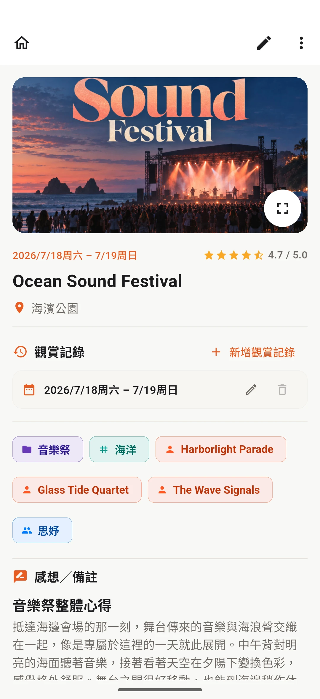
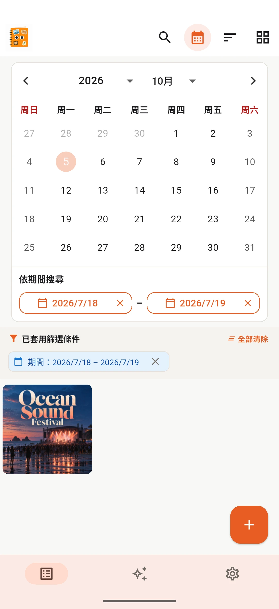
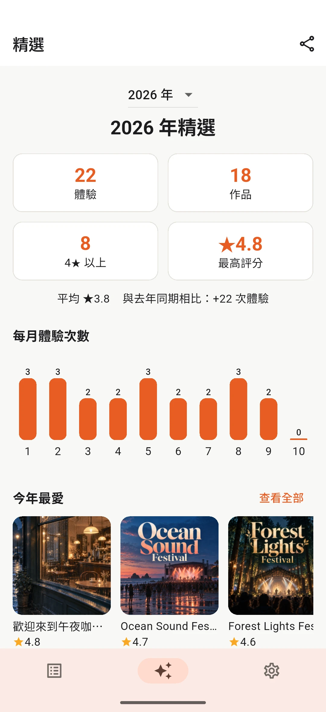
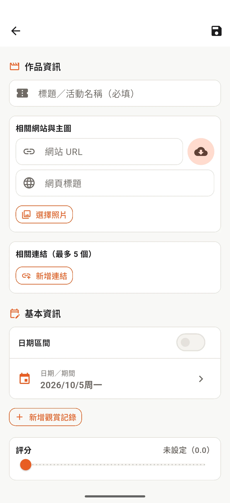

免費版
最多 20 筆記錄
- 包含所有核心功能
Mita-Mon
電影、動畫、漫畫、書籍、演唱會、舞台劇、遊戲等。把喜歡的體驗整理成自己的回憶紀錄。
回顧
「最近看了什麼？」、「去年去看了哪些演唱會？」Mita-Mon 將不同類型的回憶整理在一起，方便日後瀏覽、搜尋與回味。
一次整理
電影、書籍和現場活動會顯示在同一份列表中。切換不同檢視方式，並透過搜尋、排序和篩選找到記錄。
開啟記錄即可重溫評分、筆記和圖片。也可以透過日曆依日期尋找回憶。


精選回顧
在同一處查看記錄總數、高評價作品、類別、標籤、藝人、同行者及重複體驗。

新增記錄
不必每次填寫所有欄位。先記下重要資訊，之後再補充即可。

隱私與個人資料
記錄儲存在您的裝置中。無須建立帳號，Mita-Mon 不會將您的體驗或筆記儲存在提供者的伺服器上。
您可以將記錄與圖片匯出為備份檔，並妥善保存。